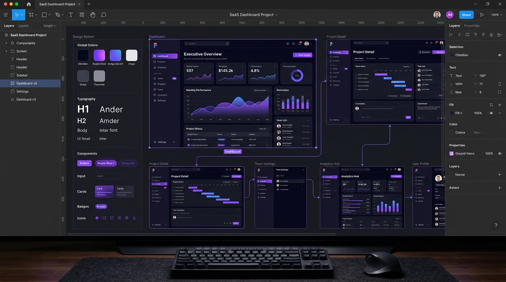

Prototipação em Alta Fidelidade:
O que você vê no Figma é exatamente o que vai para o ar
Eliminamos suposições e desperdício de investimento. Antes de escrever uma única linha de código, projetamos cada tela, fluxo, regra de validação e estado interativo com precisão milimétrica.

Como estruturamos a fundação do seu produto
Enquanto agências tradicionais desenham "telas bonitas que não funcionam no backend", nós desenhamos arquiteturas de dados visuais preparadas para engenharia de software real.
1. Engenharia Cirúrgica de Requisitos
Mapeamos regras de negócio, permissionamento de usuários, casos extremos (edge cases), validações de campos e integrações com APIs antes de qualquer rabisco.
- Mapeamento de papéis e jornadas de usuários
- Definição clara de escopo sem reuniões infinitas
- Modelagem preliminar de entidades e banco de dados
2. Design System Escalável & Tokens
Criamos uma biblioteca completa de componentes no Figma que espelha o código CSS/React/Tailwind. Cores, tipografia, estados de botões, modais e formulários seguem um padrão industrial.
- Tokens de design reutilizáveis (cores, grid, tipografia)
- Estados de componentes: Hover, Active, Loading e Disabled
- Consistência visual impecável em 100% da plataforma
3. Protótipo Interativo em Alta Fidelidade
Você recebe um link navegável do Figma onde pode clicar, alternar abas, testar fluxos de compra ou painéis analíticos como se já fosse o aplicativo pronto e publicado.
- Apresentação executiva para sócios e investidores
- Validação com usuários finais antes de investir em código
- Transição perfeita para o time de desenvolvimento
Por que nossa Fase 01 protege o seu orçamento?
Alterar um botão ou regra no Figma leva 2 minutos. Fazer isso depois que o código foi construído custa dias de retrabalho.
Desenvolvimento Tradicional / Amador
- Começa a codificar com wireframes soltos ou requisitos em rascunho de texto.
- O cliente só vê a tela semanas depois, gerando decepção estética ou funcional.
- Mudanças de layout exigem reescrita cara de HTML, CSS e componentes de backend.
- Falta de padrão visual deixa o sistema com aspecto remendado e amador.
Engenharia de Software Hydra One
- Telas em alta definição idênticas à aplicação final aprovadas antes do código.
- Você e seus clientes navegam pelo protótipo e validam fluxos em tempo real.
- Design tokens sincronizados diretamente com a arquitetura de componentes do código.
- Previsibilidade orçamentária total e eliminação de atrasos por indecisão estética.